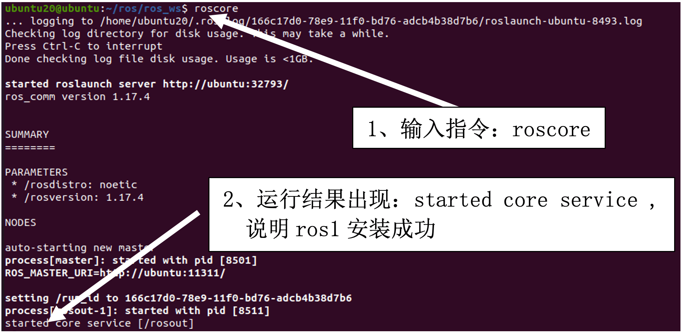
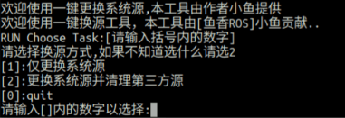
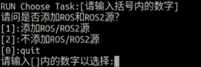
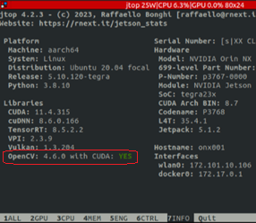
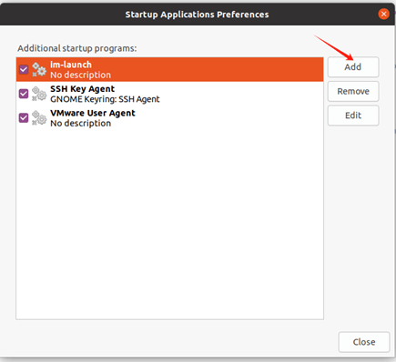
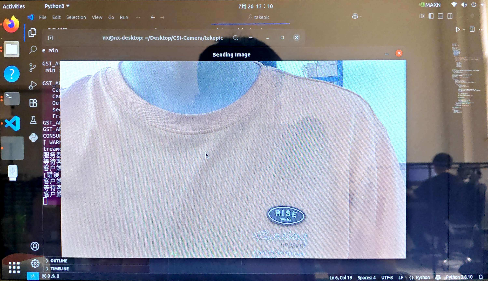
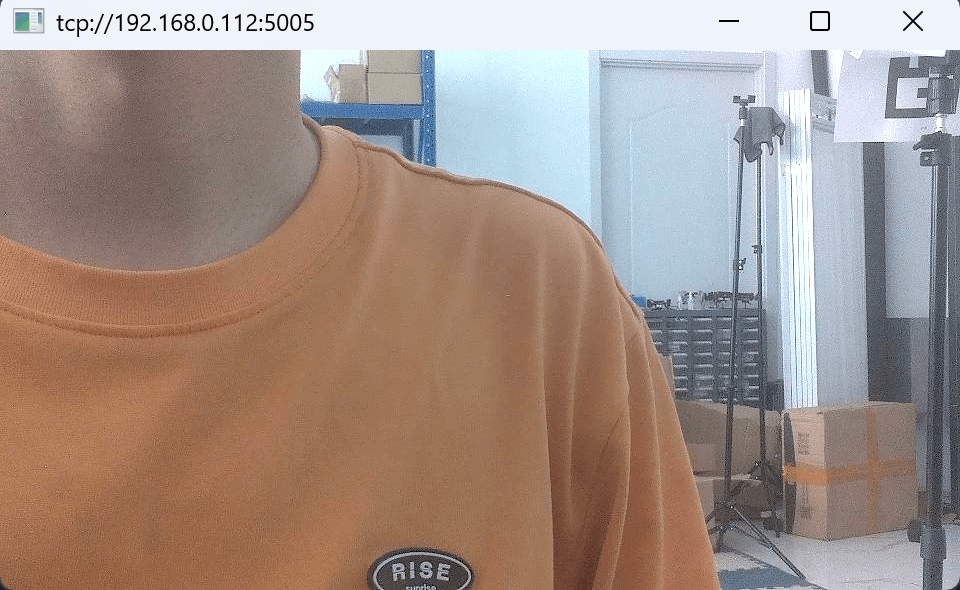

Copyright © 2019-2026 幻思创新 Fancinnov® 版权所有
第一章 JetsonNX基础环境搭建
版本信息
更新日期：2026.1.3
版本：V2.1.7
概述
本节教程将会教会你JetsonNX的基础环境搭建，保证各位在之后的学习道路上不再会为环境问题而苦恼
实验平台：FanciSwarm机载电脑无人机 ubuntu-20.04LTS
文件总览
20.04-rs-yolo.zip 提取码: g3w6
20.04-rs-yolo
├─ 70-ttyusb.rules
├─ auto_ap.sh
├─ librealsense.zip
├─ opencv-4.6.0.zip
├─ opencv_contrib-4.6.0.zip
├─ tensorrtx.zip
├─ torch-2.1.0a0+41361538.nv23.06-cp38-cp38-linux_aarch64.whl
├─ vision-release-0.16.zip
└─ yolov5.zip
ROS1安装
说明：① 系统已预装 ROS1，无需重复安装，可直接跳过 ROS1 安装步骤。
② 如何确认系统已安装ROS1：
第一步：打开终端，输入命令：roscore
第二步：查看运行结果，如下图：

我们使用fishros一键环境配置工具进行ROS1-noetic版本的安装
- 在终端输入下面命令
wget http://fishros.com/install -O fishros && . fishros
- 出现下面打印之后
_files/JetsonNXBaseEnv1.png)
我们首先选择5，系统源的更新

这一步我们选择2

这一步选择1，添加ros源
- 安装ros，我们再次输入下面命令
wget http://fishros.com/install -O fishros && . fishros
- 出现下面打印之后
然后我们输入 1 一键安装 –> 不更换源安装 –> 选择你ubuntu版本对应的ros版本(这里我们选择ROS1的noetic) –> 桌面版进行安装
- 配置rosdep,我们再次输入下面命令
wget http://fishros.com/install -O fishros && . fishros
- 出现下面打印之后
再输入 3 就一键配置了
到这里已完成ROS1安装。
安装超级终端
超级终端便于同时运行多个程序，可以进行横向纵向分割
sudo apt-get install terminator -y
安装以及配置CUDA
- 添加源
sudo gedit /etc/apt/sources.list.d/nvidia-l4t-apt-source.list
加下面两行进去
deb http://repo.download.nvidia.com/jetson/common r35.4 main
deb http://repo.download.nvidia.com/jetson/t234 r35.4 main
- 更新源
sudo apt upgrade
sudo apt update
- 装jetson包
sudo apt install nvidia-jetpack
- 配置环境变量
gedit ~/.bashrc
下面添加：
export LD_LIBRARY_PATH=/usr/local/cuda/lib64
export PATH=/usr/local/cuda/bin:$PATH
export CUDA_HOME=/usr/local/cuda
- 更新环境变量
source ~/.bashrc
- 复制文件到cuda目录
cd /usr/include && sudo cp cudnn* /usr/local/cuda/include
cd /usr/lib/aarch64-linux-gnu && sudo cp libcudnn* /usr/local/cuda/lib64
- 查看cuda
nvcc -V (出现下述信息代表安装cuda成功)
_files/JetsonNXBaseEnv4.png)
- 安装jtop（便于查询系统情况）
sudo apt install python3-pip
sudo -H pip3 install -U pip
sudo -H pip install jetson-stats
重启之后执行如下指令运行
jtop
安装opencv4.6.0 with cuda以支持GPU加速
下载地址：Release OpenCV 4.6.0 · opencv/opencv
扩展模块：Release 4.6.0 · opencv/opencv_contrib
（如果网不好，这两个依赖库也可以用幻思提供的）
解压放在home路径即可
确定 Jetson Orin NX 的算力为 8.7
_files/JetsonNXBaseEnv5.png)
cd opencv-4.6.0/
mkdir build && cd build （如果用幻思的库，已经存在build文件夹，只需要cd build）
预编译opencv 4.6.0及其扩展模块 opencv_contrib-4.6.0，生成 Makefiles 文件,如果使用幻思的库, 直接sudo make install -j8
cmake -D CMAKE_BUILD_TYPE=RELEASE \
-D CMAKE_INSTALL_PREFIX=/usr/local/ \
-D OPENCV_EXTRA_MODULES_PATH=../../opencv_contrib-4.6.0/modules \
-D WITH_CUDA=ON \
-D CUDA_ARCH_BIN=8.7 \
-D CUDA_ARCH_PTX="" \
-D ENABLE_FAST_MATH=ON \
-D CUDA_FAST_MATH=ON \
-D WITH_CUBLAS=ON \
-D WITH_LIBV4L=ON \
-D WITH_GSTREAMER=ON \
-D WITH_GSTREAMER_0_10=OFF \
-D WITH_QT=ON \
-D WITH_OPENGL=ON \
-D CUDA_NVCC_FLAGS="--expt-relaxed-constexpr" \
-D WITH_TBB=ON \
..
其中CMAKE_INSTALL_PREFIX=/usr/local/ 为安装地址，OPENCV_EXTRA_MODULES_PATH=../../opencv_contrib-4.6.0/modules 为扩展模块所在路径，
CUDA_ARCH_BIN=8.7 为 GPU 算力，
编译完成后如下所示
_files/JetsonNXBaseEnv6.png)
然后make install 编译安装 opencv 4.6.0 及其扩展模块 opencv_contrib-4.6.0，此安装过程较为漫长，请耐心等待。
sudo make install -j8
安装完成后用
jtop
查看版本

配置realsense（深度相机相关驱动）
如果已经在VINS教程中安装了realsense驱动则跳过此步骤！
- clone源码
git clone https://github.com/IntelRealSense/librealsense.git
如果下载失败可以用幻思库里的
- 安装所需的包以及编译源码
cd librealsense
sudo apt-get update
sudo apt-get install git cmake libssl-dev libusb-1.0-0-dev pkg-config libgtk-3-dev libglfw3-dev libgl1-mesa-dev libglu1-mesa-dev
mkdir build（如果用幻思提供的软件包，这个build已经存在，跳过此步）
cd build
cmake ../ (这一步如果网不好多试几次)
make -j4
sudo make install
- 配置USB规则
cd ..
sudo cp config/99-realsense-libusb.rules /etc/udev/rules.d/
sudo udevadm control --reload-rules
sudo udevadm trigger
- 验证安装
rs-enumerate-devices #成功的话会列出设备信息
realsense-viewer #查看视频流
- 安装对应的python包
pip install pyrealsense2
YOLO-V5配置
sudo pip3 install torch-2.1.0a0+41361538.nv23.06-cp38-cp38-linux_aarch64.whl
sudo apt-get install libopenblas-dev
cd vision-release-0.16
export BUILD_VERSION=0.16
python setup.py install --user
cd ..
$ python3
>>> import torch
>>> import torchvision
>>> print(torch.__version__)
>>> print(torchvision.__version__)
以上为检查torch版本信息的步骤，若能正常导入且无报错，则说明安装成功。
pip install tqdm
pip install Ipython
pip install seaborn
pip install numpy==1.23.0
pip install pycuda
pip install pyserial
至此系统环境就已经配置完成
运行YOLO-V5程序
- 配置串口可执行权限：注意这个指令只能确保当前终端拥有串口使用权限
sudo chmod 777 /dev/ttyTHS0
- YOLO-V5工程
直接用幻思压缩包中的工程。
解压tensorrtx和yolov5工程到/home/nv目录下面
- 生成wts文件(中间文件，我们的最终目标是生成engine文件)
cd ./yolov5
wget https://github.com/ultralytics/yolov5/releases/download/v7.0/yolov5s.pt
cp ~/tensorrtx/yolov5/gen_wts.py .
pip install numpy==1.20.3
python gen_wts.py -w yolov5s.pt -o yolov5s.wts
pip install numpy==1.23.0
- 生成engine文件
cd ~/tensorrtx/yolov5/
mkdir build
cd build
cp ~/yolov5/yolov5s.wts .
cmake .. # 如果使用幻思提供的tensorrtx包，最好先清空build文件夹再进行cmake ..
make
./yolov5_det -s yolov5s.wts yolov5s.engine s
cd ~/tensorrtx/yolov5
sudo chmod 777 /dev/ttyTHS0
将Jetson电源模式调到MAXN，然后运行以下命令:
python yolov5_det_trt_rs.py
更换模型文件
这里我们准备好了一个模型文件，可以直接进行engine文件的生成
-
删除原先tensorrtx/yolov5/下的build文件夹下的文件
-
在tensorrtx/yolov5/src/的文件夹下的config.h文件中
constexpr static int kNumClass = 6; // 更改成训练模型的类别数量(我们提供的person模型的类别为6种)
- 进入build文件夹进行编译
cd build && cmake .. && make
- 生成engine文件
./yolov5_det -s person.wts person.engine s
- 修改模型文件名 640行
yolov5_det_trt_rs.py
engine_file_path = "./build/person.engine"
全部工程自动运行
配置串口可执行权限：
用如下指令把权限配置文件复制到目录/etc/udev/rules.d/中
sudo cp 70-ttyusb.rules /etc/udev/rules.d/
重启电脑后生效
sh auto_ap.sh
开机自启动
- 配置ubuntu系统 auto login
_files/JetsonNXBaseEnv8.png)
（2）配置自启动文件 auto_ap.sh
注意文件中的工程路径是否与自己的一致，不一致的自己修改一下。
（3）终端输入sh auto_ap.sh
检测slam工程是否在一分钟内正常启动
（4）配置auto_ap.sh开机自动运行
_files/JetsonNXBaseEnv9.png)
打开Startup Application
_files/JetsonNXBaseEnv10.png)
点击add

先填个Name，再在Command处添加sh /home/nv/auto_ap.sh。
此时已完成开机自启动配置
（5）推荐把Jetson NX的功率设置为MAXN
重启系统验证一下吧！看看yolo界面有没有在开机1分钟内正常运行。
第二章 JetsonNX视频流传输
概述
本节教程你将学会如何将JetsonNX上的CSI摄像头数据以TCP协议发送到PC端。
注意: yolo检测程序中自带视频流传输，占用端口均为5005。
文件总览
- TcpNoDelay_transtream_NX JetsonNX端python文件
TcpNoDelay_transtream_NX.py
- TcpNoDelay_recvstream_PC PC端python文件
TcpNoDelay_recvstream_PC.py
环境配置
确保JetsonNX环境已经按照“JetsonNX基础环境搭建”配置完毕
PC端环境配置：
python环境：3.10
安装opencv以及对应版本的numpy
pip install opencv-contrib-python==4.6.0.66
pip install numpy==1.24.0
运行程序
JetsonNX端
python3 TcpNoDelay_transtream_NX.py

PC端
python TcpNoDelay_recvstream_PC.py

代码讲解
JetsonNX端代码
- 导入库文件并定义全局参数
- TCP_IP设置为0.0.0.0代表监听外来所有ip
import socket
import cv2
import numpy as np
# 配置 {#配置 }
TCP_IP = '0.0.0.0'
TCP_PORT = 5005
- 套接字通信对象的创建和使用GStreamer管道配置打开摄像头
- 接下来是一个名为gstreamer_pipeline的函数，用于生成GStreamer管道字符串。这个函数允许用户根据参数配置摄像头的输入输出流。
- 最后就是使用gstreamer_pipeline函数的输出作为摄像头数据传入cap中。
# 实例化套接字通信对象 {#实例化套接字通信对象 }
def gstreamer_pipeline(
sensor_id=0,
capture_width=1920,
capture_height=1080,
display_width=960,
display_height=540,
framerate=30,
flip_method=0,
):
return (
"nvarguscamerasrc sensor-id=%d ! "
"video/x-raw(memory:NVMM), width=(int)%d, height=(int)%d, framerate=(fraction)%d/1 ! "
"nvvidconv flip-method=%d ! "
"video/x-raw, width=(int)%d, height=(int)%d, format=(string)BGRx ! "
"videoconvert ! "
"video/x-raw, format=(string)BGR ! appsink"
% (
sensor_id,
capture_width,
capture_height,
framerate,
flip_method,
display_width,
display_height,
)
)
# 初始化摄像头 {#初始化摄像头 }
cap = cv2.VideoCapture(gstreamer_pipeline(flip_method=2), cv2.CAP_GSTREAMER)
if not cap.isOpened():
print("无法打开摄像头，尝试使用默认摄像头设备")
cap = cv2.VideoCapture(0)
# 创建服务器套接字 {#创建服务器套接字 }
sock = socket.socket(socket.AF_INET, socket.SOCK_STREAM)
sock.bind((TCP_IP, TCP_PORT))
sock.listen(1)
print(f"服务器已启动，监听 {TCP_IP}:{TCP_PORT}")
- 使用一个死循环不断读取cap摄像头对象中的数据，图像数据传入frame中再通过编码，字节转化，最终TCP发送。
try:
while True:
print("等待客户端连接...")
conn, addr = sock.accept()
print(f"客户端已连接：{addr}")
conn.setsockopt(socket.IPPROTO_TCP, socket.TCP_NODELAY, 1)
try:
while True:
ret, frame = cap.read()
if not ret:
print("无法读取摄像头画面")
break
# 编码为JPEG
encode_param = [int(cv2.IMWRITE_JPEG_QUALITY), 70]
result, img_encoded = cv2.imencode('.jpg', frame, encode_param)
if not result:
continue
data = img_encoded.tobytes()
# 发送图像大小（4字节）
conn.sendall(len(data).to_bytes(4, 'big'))
# 发送图像数据
conn.sendall(data)
# 显示本地画面（可选）
cv2.imshow('Sending Image', frame)
if cv2.waitKey(1) == 27: # 按 ESC 退出
raise KeyboardInterrupt
except (BrokenPipeError, ConnectionResetError) as e:
print(f"[错误] 客户端断开连接: {e}")
finally:
conn.close()
print("客户端连接已关闭，等待新连接...")
except KeyboardInterrupt:
print("服务器正在关闭...")
finally:
cap.release()
cv2.destroyAllWindows()
sock.close()
print("所有资源已释放")
PC端代码
- 导入库文件
import cv2
import numpy as np
import subprocess
from multiprocessing import Array
- 使用ffplay来接受视频流并使用cv2.imshow来播放(ffplay是ffmpeg提供的方法，如何下载自行查找)
- 创建共享内存，使用ffplay接收流数据，使用自定义video_display数据来展示画面
def video_display(ffmpeg_command, frame_array, W_img, H_img):
process = subprocess.Popen(ffmpeg_command, stdout=subprocess.PIPE)
while True:
raw_frame = process.stdout.read(W_img * H_img * 3) # RGB 3 channels
if not raw_frame:
break
# 将帧复制到共享内存中
frame = np.frombuffer(raw_frame, dtype=np.uint8).reshape(H_img, W_img, 3)
np.copyto(np.frombuffer(frame_array.get_obj(), dtype=np.uint8).reshape(H_img, W_img, 3), frame)
# 显示帧
cv2.imshow('Real-Time Video', frame)
if cv2.waitKey(1) & 0xFF == ord('q'):
break
cv2.destroyAllWindows()
process.terminate()
if __name__ == '__main__':
W_img = 640
H_img = 480
shared_frame = Array('B', W_img * H_img * 3) # RGB 3通道，大小为像素数 × 3
ffmpeg_command = [
'ffplay',
'-i', 'tcp://192.168.0.112:5005', # 这里的地址要使用JetsonNX的地址，需要自行替换。
'-vf', 'setpts=N/30',
'-fflags', 'nobuffer',
'-flags', 'low_delay',
'-framedrop'
]
video_display(ffmpeg_command, shared_frame, W_img, H_img)
第三章 识别追踪接入 ROS
注意：本节使用的 ROS 工程为 fcu_core_v2，不兼容 第一版的 fcu_core。
前面几章都是在 Ubuntu 20.04 自带的 Python 环境下直接与飞控通信并控制飞机。为了提高系统的可靠性与可扩展性，本章演示如何在 Jetson NX 上部署 ROS，并把 yolov5_det_trt_rs.py 修改为 ROS 节点，从而实现通过 ROS 与上位机/飞控的协同控制与识别追踪。
接入 ROS 的好处：
- 统一由
fcu_core管理机载电脑（JetsonNX）与飞控之间的通信； - 可以复用并扩展我们维护的
fcu_core_v2功能，实现远程控制（如开启/关闭识别追踪）、更好的兼容性以及多节点协同。
ROS 环境搭建（机载电脑）
- 创建 ROS 工作空间
mkdir -p ~/ros_ws/src
cd ~/ros_ws/src
git clone https://github.com/fancinnov/fcu_core_v2.git
git clone https://github.com/fancinnov/quadrotor_msgs.git
- 配置 launch 参数（示例）
channel参数设为0表示使用串口通信；offboard参数设为true表示由机载电脑进行 offboard 控制。
示例片段：
<node pkg="fcu_core" type="fcu_bridge_001" name="fcu_bridge_001" output="screen">
<remap from="~odometry_001" to="Odometry"/>
<remap from="~imu_global_001" to="imu_global_001"/>
<remap from="~odom_global_001" to="odom_global_001"/>
<remap from="~path_global_001" to="path_global_001"/>
<remap from="~path_target_001" to="path_target_001"/>
<remap from="~goal_001" to="/move_base_simple/goal"/>
<remap from="~motion_001" to="motion_001"/>
<remap from="~command" to="/fcu_command/command"/>
<remap from="~mission_001" to="/fcu_mission/mission_001"/>
<param name="DRONE_IP" value="192.168.4.1" type="string"/>
<param name="USB_PORT" value="/dev/ttyTHS0" type="string"/>
<param name="channel" value="0"/>
<param name="offboard" value="true" type="bool"/>
<param name="use_uwb" value="false" type="bool"/>
<param name="set_goal" value="false" type="bool"/>
<param name="simple_target" value="true" type="bool"/>
<param name="odom_init_x" value="0.0"/> <!-- FLU 坐标系 -->
<param name="odom_init_y" value="0.0"/>
<param name="odom_init_z" value="0.0"/>
</node>
下面给出接入 ROS 的要点：
- 导入 ROS Python 包：
import rospy
from std_msgs.msg import Int16
from std_msgs.msg import Float32MultiArray
rospy 是 ROS 的 Python 客户端库；Int16 用于接收整数命令；Float32MultiArray 用于发布浮点数组形式的控制指令。
- 创建节点、订阅命令并创建发布者：
rospy.init_node('yolo_det_trt', anonymous=True)
command_sub = rospy.Subscriber('/fcu_command/command', Int16, command_callback)
mission_pub = rospy.Publisher('/mission_follow', Float32MultiArray, queue_size=100)
- 定义命令回调：
IsDetect = False
def command_callback(msg):
global IsDetect
if msg.data == 1001:
print("开始前视识别追踪")
IsDetect = True
elif msg.data == 1002:
print("开始俯视识别追踪")
# 根据需要在此设置为俯视模式
elif msg.data == 1003:
print("停止识别追踪")
IsDetect = False
- 创建控制指令发布函数
set_pose：
def set_pose(x, y, z, yaw):
msg = Float32MultiArray()
msg.data = [
yaw, 0,
x, y, z,
0, 0, 0, 0, 0, 0, 0]
mission_pub.publish(msg)
说明：这里使用长度为 11 的数组发布控制命令（按 fcu_core_v2 的接口格式）。
- 在主循环中根据
IsDetect控制是否执行识别追踪：
global IsDetect
if not IsDetect:
rospy.sleep(0.1)
return frame, 0 # 跳出本次循环；在某些文件中（例如 yolo）改为 return，请参见替换文件
替换文件
为了方便，我们提供了已修改好的 ROS 版本脚本，直接替换对应位置即可：
- 将 yolov5_det_trt_rs(ros).py 替换至
tensorrtx/yolov5/；